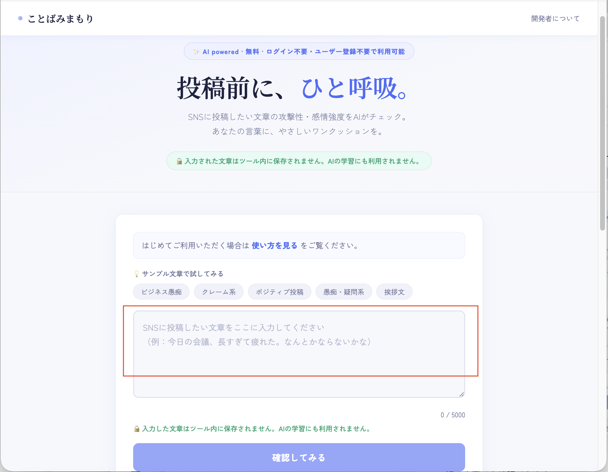
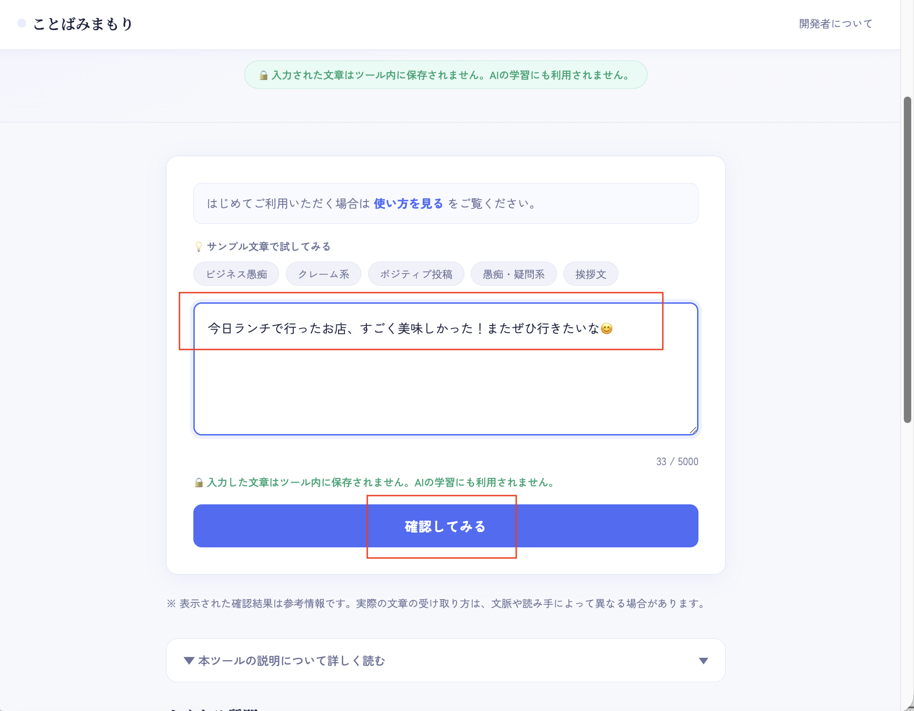
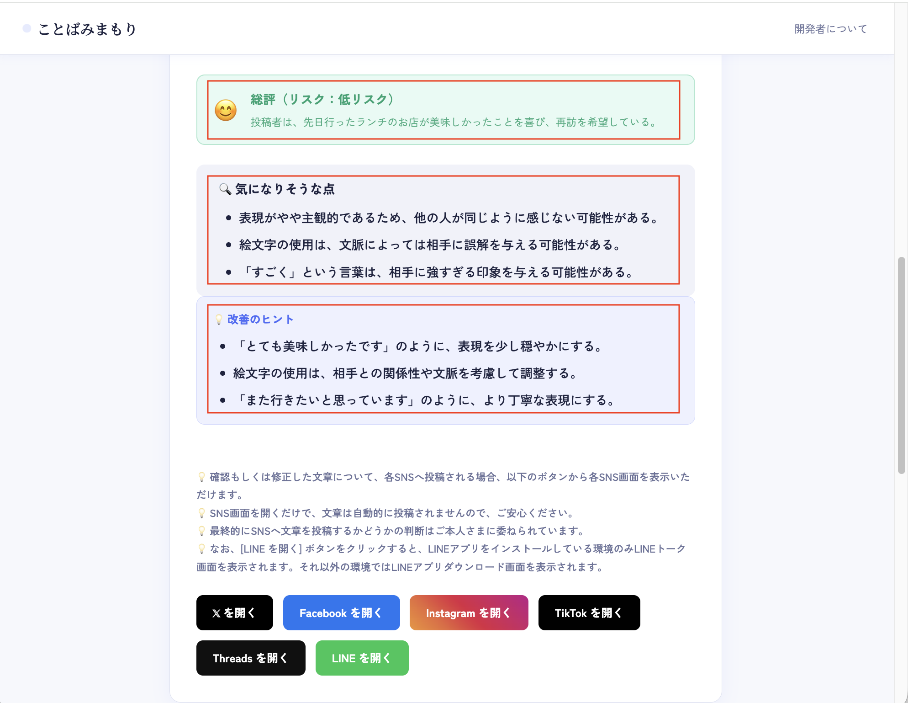
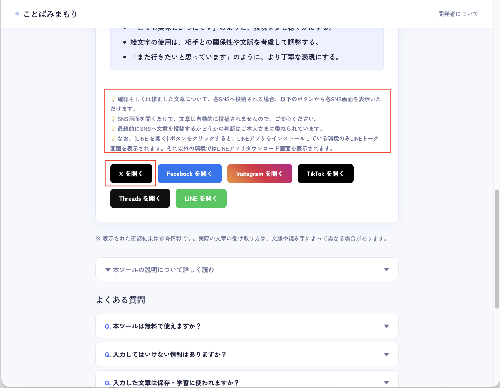
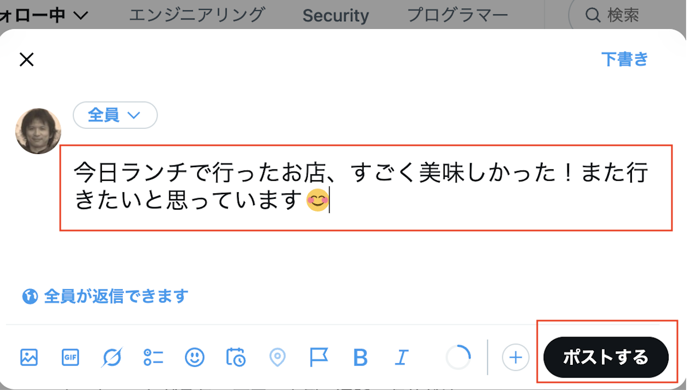

「ことばみまもり」は、SNSへ投稿したい文章について、
表現の強さや伝わり方の傾向を確認しながら、
投稿前にひと呼吸おくための参考情報を表示するツールです。
はじめてご利用される方にも安心してお使いいただけるよう、
このページでは基本的な使い方と、活用しやすい場面をご案内します。
どんな時に使うとよいか
「ことばみまもり」は、文章の正誤を決めるためのものではなく、 投稿前に表現を少し見直したい時の補助としてご利用いただく想定です。
- SNSへ投稿する前に、言い方がきつく見えないか少し気になる時
- 気持ちが高ぶっている時に、いったん落ち着いて文章を見直したい時
- 相手に誤解なく伝わる表現になっているか確認したい時
- 下書きした文章を、もう少しやわらかい表現に整えたい時
確認したい文章を入力します
トップページの入力欄に、SNSへ投稿したい文章を入力します。
投稿前に「この言い方で伝わりやすいかな」「少し強すぎないかな」と感じた文章を、
そのまま入力して確認できます。

入力欄に、確認したい文章を入力します。
- 短い文章でも確認できます。
- 投稿前の下書きや、送信前の文面チェックにもご利用いただけます。
- 入力した文章はツール内に保存されません。
「確認してみる」ボタンをクリックします
文章を入力したあと、画面下の
「確認してみる」
ボタンをクリックしてください。
入力した文章をもとに、AIが参考情報を表示します。

テキスト入力後、「確認してみる」ボタンをクリックします。
- 文章が未入力の場合は、先に文章を入力してください。
- 確認結果が表示されるまで、少し時間がかかる場合があります。
確認結果を参考に、必要に応じて表現を整えます。
確認結果では、文章全体の傾向に加えて、
気になりそうな点 や
改善のヒント
が表示されます。
必要に応じて文章を見直し、より伝わりやすく、やわらかい表現に整えてみてください。

テキストの確認結果として、リスク・気になりそうな点・改善のヒントが表示されます。
- 表示内容は参考情報であり、正確性や完全性を保証するものではありません。
- 最終的に投稿するかどうかの判断は、ご利用者さまご自身で行ってください。
- 必要に応じて文章を修正し、再度チェックすることもできます。
文章の確認後、各SNSへ投稿したい場合、各SNSを開くボタンもご利用いただけます。
X（旧Twitter）、Facebook、Instagram、TikTok、Threads、LINEを開くボタンを設置しています。
確認もしくは修正した文章について、各SNSへ投稿いただく場合、
各SNSを開くボタンをクリックすると、各SNS画面を表示いただけます。
各SNS画面を表示するだけで、文章は自動的に投稿されませんので、ご安心ください。
最終的にSNSへ文章を投稿するかどうかの判断はご利用者さまに委ねられています。
なお、[LINE を開く] ボタンをクリックすると、LINEアプリをインストールしている環境のみLINEトーク画面が表示されます。それ以外の環境ではLINEアプリダウンロード画面が表示されます。

確認した文章について、各SNSへ投稿する場合、各SNS画面を開くボタンをご利用いただけます。
- 各SNSを開くボタンをクリックしても、各SNS画面を表示するだけです。
- ボタンをクリックしても、文章を自動的に投稿しないようにしております。ご安心ください。
- 最終的にSNSへ文章を投稿するかどうかの判断はご利用者さまに委ねられています。
例えば、[X を開く]ボタンをクリックすると、Xの画面が表示されます。
例えば、[X を開く]ボタンをクリックすると、Xの画面が表示されます。
Xの画面が表示されるので、
確認もしくは修正した文章を記載して、Xへ投稿いただくことが可能です。

例えば、[X を開く]ボタンをクリックすると、Xの画面が表示されます。
- Xを開くボタンをクリックすると、Xの画面が表示されます。
- 投稿したい文章を記載していただいて、投稿することが可能です。